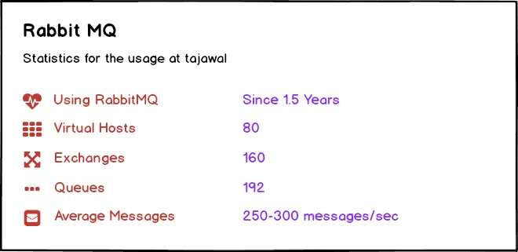
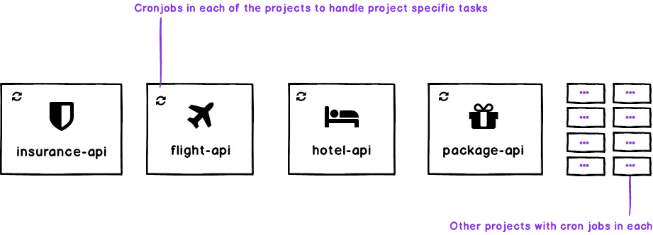
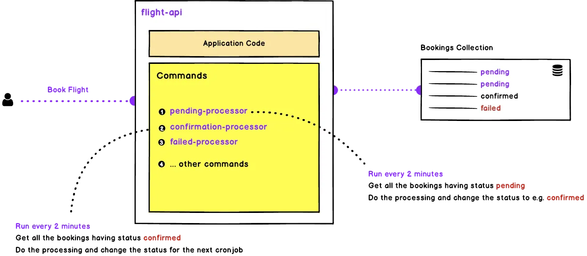
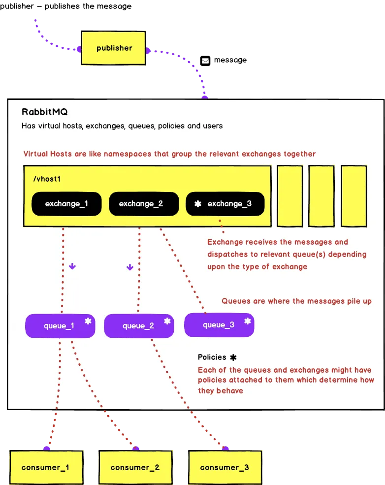
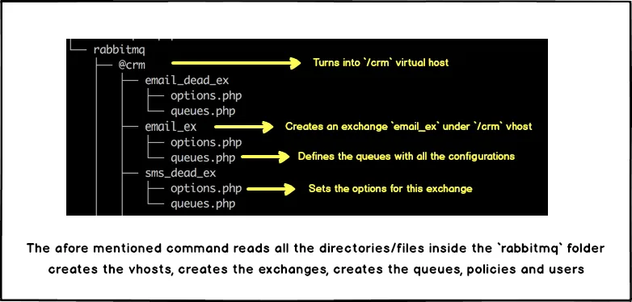
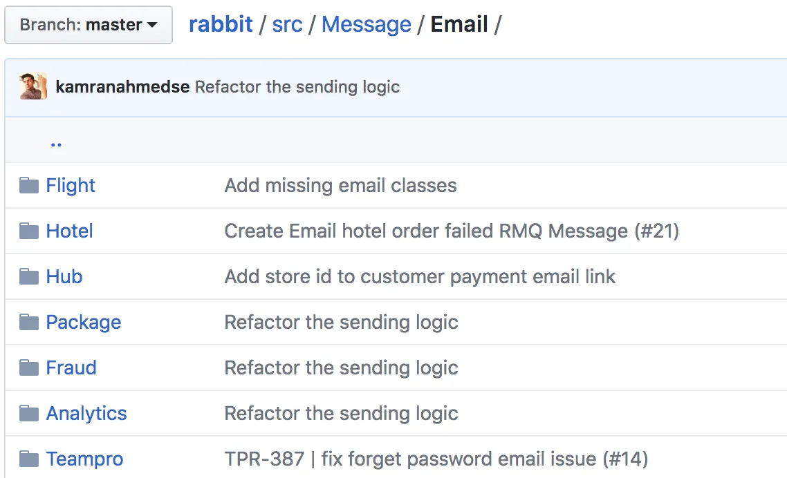
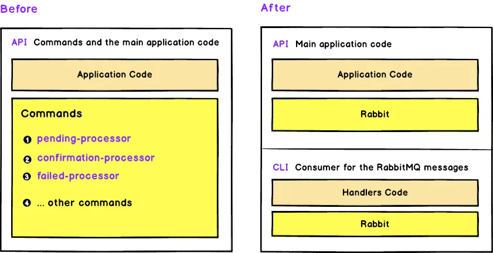
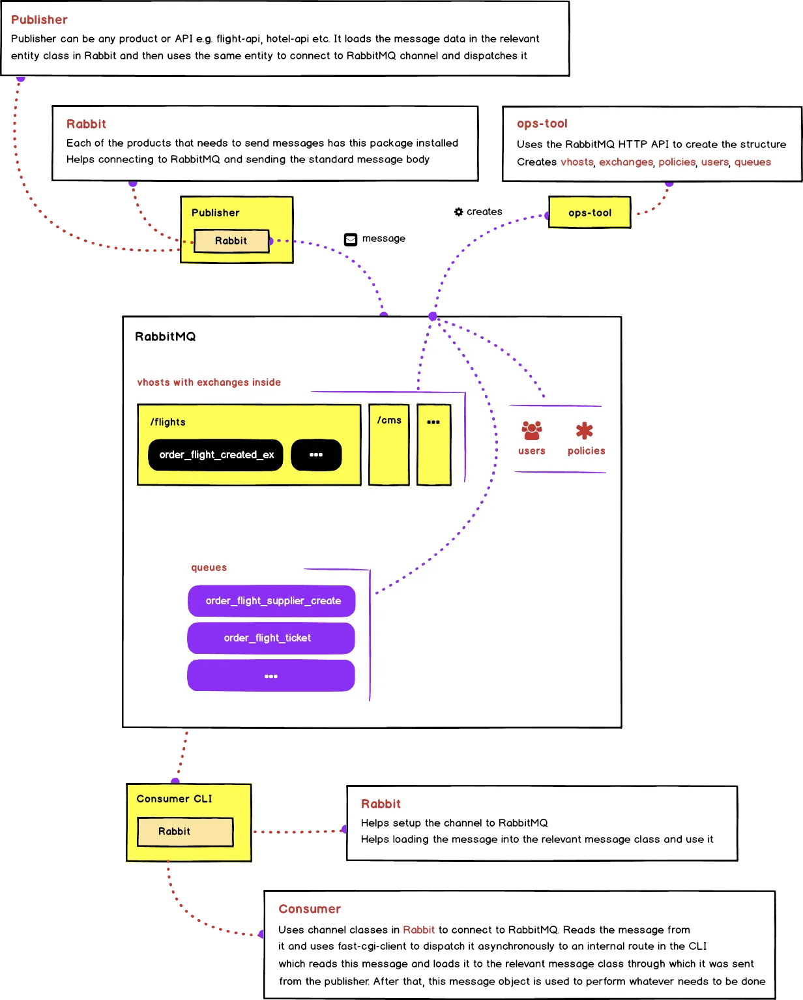

September 9, 2018
We have a suite of products at tajawal, made out of ~80 services both internal and external. We have been using RabbitMQ extensively and it has worked pretty well for us over the past year and a half. This article is going to be a brief overview of how we migrated our cronjobs based system to use RabbitMQ and to give you an idea about how all of it is set up.
At the time of writing this article, RabbitMQ has been live for around a year and a half. There are 80 virtual hosts, 160 exchanges, and 192 queues. The average message rate is around 250–300 messages per second depending upon the time of the day and the count and nature of bookings coming in.

Before integrating RabbitMQ, everything used to be handled through cronjobs and HTTP requests. Each of the products used to have their own set of cronjobs that were handling the tasks related to that service.

To give you an idea, for example, while booking a flight as soon as the user used to checkout, we would create a booking entry in the database with the status set to pending. Then a cronjob responsible for handling pending status would pick it up, do the necessary processing and change the status for some next cronjob, then the next cronjob would pick it up, perform its processing and change the status for the next cronjob and so on. This chain of cronjobs would continue till the order is fulfilled and the ticket is sent to the customer. This wasn’t really the best setup but it was intentionally made it that way so to keep it simple and allow us to easily replace this later on with any queuing mechanism if required. Here is the example image to give you the basic idea of how each of the products was set up.

The mechanism worked pretty well for some time. But as the systems kept growing, HTTP calls and the cronjobs started to show age. Most of the common issues encountered were:
Keeping in view these issues, we started looking for the alternatives with at least the below listed items being in our wishlist
The idea was to make our systems easier to scale by converting mainly the state-flow and some other key functionalities to be handled through some queuing mechanism instead of the cronjobs.
We did some research and looked at the available alternatives. After comparisons and some thorough research, it came down to either using Apache Kafka or to go with RabbitMQ and we finally decided to go with RabbitMQ; mainly because of the reasons listed below –
Before I go and explain how RabbitMQ fits into our architecture, let me put below a rough diagram of how RabbitMQ works

Have a look at this article if you would like to understand the different parts shown in the diagram above.
In the next sections, I will discuss how we have put it all together to make it work for us. First of all, I will be discussing how we are defining the required structures, then we discuss how the publishers are set to dispatch the messages, after that we will be discussing how the consumers consume these messages and then I will end the article with the bigger picture of how all of it is put together.
Before you start using RabbitMQ, you need to define all the key pieces i.e. vhosts, exchanges, queues, policies and users. There are multiple ways to define them
We wanted something flexible so we ended up using the API. We have an internal tool called ops-tool where we have defined all the vhosts, exchanges and queues in the form of a folder structure. Whenever the developers have to update the virtual hosts, users, exchanges, queues or policies, all they have to do is open that tool, modify or add to the folder structure and run the command and it will automatically do the necessary modifications using the API. Diagram below shows part of the directory structure that is turned into the vhosts, exchanges and queues.

The command is idempotent; evaluates the difference and only applies the provided changes without affecting any existing structure. Plus, it is registered in the docker machines used by developers so that the changes are replicated on the developer machines as soon as they are made.
With the lots of applications and the messages coming from many different publishers, it was of the paramount importance that we standardize the message formats. In order to do that we created a standard package called Rabbit which helps the publishers connect to the broker and generate the standard messages to be sent. All the messages have to be defined in the form of classes in this package and messages must be dispatched by creating instances of these classes. Any application that wants to connect to RabbitMQ, it must have this package installed and the message formats defined.

On the consumers side, we decided to split the commands from the actual projects and thus created associated cli applications for each of the products. For example, flight-api was divided into two applications i.e. flight-api and flight-api-cli, hotel-api divided into hotel-api and hotel-api-cli and so on.

CLI applications or consumers are just the simple commands that receive the messages and dispatch async requests using FPM to the relevant handler for that message.
Here is the bigger picture of how all of it is put together

In the image above, publisher can be any product that wants to dispatch messages with the package Rabbit installed in it. To explain it with an example, in the case of bookings API the publisher is booking-api; whenever there is a checkout, it would get the booking details, populate them in the object of relevant message class found in the Rabbit package and dispatch it on the relevant channel. This message will automatically find the relevant exchange because of the configuration available in the message class which was used to dispatch the message. Broker will then route it to the relevant queue based on the type of exchange. After that, the consumer kicks in, which is normally the CLI application e.g. bookings-cli in this case. It will use the channel class found in the RabbitMQ to pull the message from the relevant queue and dispatch it asynchronously using fpm-client to an internal route in the CLI for it to be handled accordingly. The route handler will catch this fpm request, will then populate this message back into the object of the Message class in the Rabbit package and process it accordingly.